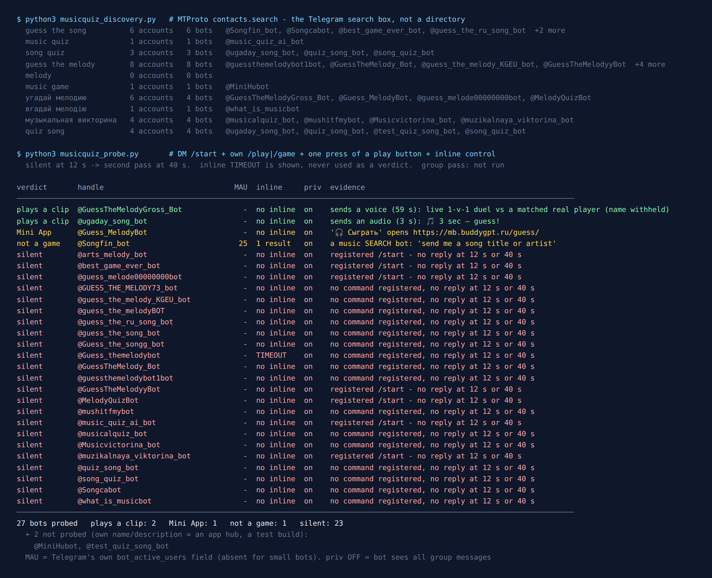

Telegram Guess the Song Bots: 27 Tested, 2 Play a Clip
“Guess the song” is one of the easiest party games there is. Somebody plays a few seconds of a track, and whoever names it first wins the point. You need no board, no cards and no rules sheet. The best-known version is Name That Tune, which started on American radio in 1952 and moved to television a year later. Russian television later had its own version, «Угадай мелодию». That explains why half the bots in this list carry the Russian name.
A group chat seems like the perfect place for it. A bot can post a clip, show a row of answer buttons and keep score. So on the evening of 23 September 2026 I asked Telegram’s own search which music quiz bots exist, messaged every one it returned, pressed the play button when there was one, and wrote down what came back. It’s the same test I ran on board game bots two nights earlier and on card game bots before that.
29 bots came back. I messaged 27 of them. 23 never answered, at twelve seconds or at forty. Two sent me an actual clip. That’s the worst survival rate in the whole series. And the first result for “guess the song”, a bot literally named Guess the song, turned out not to be a game.

How the list was built
Web directories keep listing a bot for years after its server stops. So this list came from the platform itself. The Telegram search box calls an API method named contacts.search, which only returns accounts that exist right now. I ran it from a script with the same account I use for everything else in this series.
I wrote down ten queries before measuring anything: guess the song, music quiz, song quiz, guess the melody, melody, music game, угадай мелодию, вгадай мелодію, музыкальная викторина and quiz song. They turned up 29 distinct bots. Before sending any message I set two aside, going only by each bot’s own name and description. @MiniHubot is a hub of Mini Apps and a music collection, and @test_quiz_song_bot calls itself a test build of another bot on the list.
Each of the other 27 got the same treatment:
/startin a private message, with replies collected for twelve seconds.- The bot’s own game command, if it had registered one with BotFather (
/next_song,/genre,/help). I never sent a guessed command. - If no clip had arrived yet, one press of a play-like button. I pressed it once, because the question was whether a round starts, not how well I play.
- An inline query as a liveness check. Telegram forwards it to the bot’s server and waits for an answer, so a live server gives a second channel.
Every bot that stayed silent got a second pass at forty seconds. For the four that answered, I followed their menus by hand, one recorded button at a time, until a clip arrived or the path left the chat.
The search results, before a single message
The search box has opinions. melody on its own returned zero accounts: no bots, no people, no channels. music quiz returned exactly one. guess the melody was the richest English query with eight bots, and every one of those eight was a small project called some variation of Guess the melody, such as @guessthemelodybot1bot, @GuessTheMelodyyBot or @GUESS_THE_MELODY73_bot. The digits and doubled letters are the tell. The clean username had already been taken, so each new builder added a character and shipped.
Telegram also publishes a monthly user count on bigger bots, the bot_active_users field. On the card game census eleven of 39 bots carried one. The biggest board game bot had 98,410. Here, exactly one of 29 carried the field, and its value was 25. A missing count is not proof that a bot is small, but no music quiz bot here came near the size of the chess or Uno bots.
The first result for “guess the song” is not a game
@Songfin_bot is called Guess the song, sits at the top of the guess the song results, and is the only bot here with a public user count. It answered /start with a language picker offering 21 languages, which is the most polished first screen in the set. After I chose English, it said: “I’ll help you find music, send me some of this: song title or artist.”
So it’s a music search bot. You give it a title and it finds the track. Nothing gets guessed. Its inline mode works too, returning a single result, “Enter your search term”. It’s a working bot filed under a game’s name. I’ve seen that pattern in every census so far: the top “spy” bot recorded chats, and one of the backgammon bots was a password help desk.
The duel bot matched me with a real person in under 20 seconds
@GuessTheMelodyGross_Bot opened with a menu: Random song, Top players, a link to its music channel, Play online duels and a duel leaderboard. The play-like button my script pressed was Play online duels. That’s where the test stopped being a test. Within the twenty-second wait the bot answered “finding you an opponent”, then posted a duel card: a real player with a rating of 1,492 against me at the default 1,500. It came with a 59-second voice message and seven answer buttons, all Russian song titles, and the instruction to pick the right one faster than your opponent.
I didn’t answer, since I hadn’t come to play against a stranger. The round closed on its own: “Nobody gave the correct answer.” The track was Alexander Rosenbaum’s «Не хочу стареть». Both ratings stayed exactly where they were. The bot then put its main menu back up. It did not queue me for the next duel.
That still tells you what the test was built to find out. The bot is alive, it has enough players that matchmaking finds someone at 23:00 Kyiv time on a Wednesday, and it gets the hard part of the game right. The hard part is making two people hear the same clip at the same moment and scoring whoever answers first.
The other working bot lets you choose how hard it is
@ugaday_song_bot (display name Music Quiz) starts with a two-language picker. After that, each screen is one clean question: Play, then a playlist (All Songs, By Year, Russian, Foreign, Pop), then clip length. That last choice is the nicest design touch in the census. The options are 1, 3, 6 or 12 seconds, with the note “Shorter clip = more points!” I picked three seconds. The bot sent a 3-second MP3 and four answer buttons plus Skip, and All Songs served Russian hip-hop: Баста, GUF, Децл, Каспийский Груз.
You play it alone, in a private chat. It has a leaderboard and nicknames, but nothing in its menus mentions groups. So it’s a solo trainer, not a party host.
Want a round for the whole chat, without adding a bot?
The free Party Game runs inside Telegram itself, so there’s nothing to add to your group, no admin rights, and nothing reading the chat: Would You Rather, Never Have I Ever, Truth or Dare and quiz rounds, from two players up. It has no music rounds.
Open the Party Game No Telegram? It runs in a browser too: charliemorrison.dev/party-gameHow a music bot can give away the answer, and how both working bots avoid it
This section is for anyone building one of these. Telegram gives a bot two ways to send sound, and they don’t reveal the same things.
sendAudio puts the file in Telegram’s music player. The Audio object carries performer, title and file_name, and the client displays them. A lazy guess-the-song bot that uploads Rosenbaum - Ne hochu staret.mp3 as audio shows the answer right under the play button. sendVoice sends the file as a voice message instead, and the Voice object has no title field at all, just a duration.
The two working bots avoid the leak in different ways, and I read both off the raw message attributes, not the screen:
@GuessTheMelodyGross_Botsends a voice message. There are no metadata fields to leak.@ugaday_song_botsends a real audio file, but withtitleandperformerboth empty and the file named3s.mp3. The name gives away the clip length and nothing else.
Either way works. The voice route costs you the music player’s scrubbing and speed controls, which in a timed game is arguably a feature. The audio route needs you to scrub the metadata on every single upload, and one forgotten tag spoils one round.
The one that plays outside the chat
@Guess_MelodyBot has the best pitch in the list: “10 tracks, 10 seconds each. Name the artist faster than everyone: the faster the answer, the more points, and a streak multiplies the score. Challenge a friend to a duel: they hear the same 10 tracks.” Its only button, Сыграть (“Play”), is a WebView button. It opens a Mini App at mb.buddygpt.ru/guess/, which returned HTTP 200 when I fetched it. The game runs inside that web page, not in the chat. I didn’t play through the Mini App, so I record it as a Mini App, not as “plays a clip”.
The friend-duel design, where both people get the same ten tracks and compare scores later, gets around the timing problem the rated duel bot solves with live matchmaking. You don’t both have to be online at the same moment.
The 23 that never answered
Twenty-three of the 27 were silent at twelve seconds and again at forty. They include every bot the музыкальная викторина query found, every one of the eight Guess the melody variants, @MelodyQuizBot (which lists a /subscription command and a support email), and @best_game_ever_bot, whose own description promises “a 2 seconds sample of a song”.
One of them is a special case. @music_quiz_ai_bot links its source code on GitHub and describes itself as a music quiz with AI-generated questions. The code is public and the bot is silent. That’s the usual shape of a finished side project whose server someone stopped paying for.
For comparison, 8 of 17 board game bots were silent, 10 of 39 card game bots, and 29 of 49 spy game bots. Here it’s 23 of 27, or 85%. Music may be harder to keep running than chess. A clip library has to be stored, cut and served, and a board is just text. I can’t prove that from this data, but it fits.
Only one of the 23, @Guess_themelodybot, produced an inline timeout, meaning Telegram forwarded the query and no server answered. The other 22 have inline mode off, so the test has no second channel to reach them. Silent is the verdict. Dead would be a guess.
For a group that would rather not add a bot
The Telegram Party Pack is 255 group-chat prompts — 45 Never Have I Ever statements, 30 Would You Rather dilemmas, 110 Truth or Dare — as copy-paste text and ready-made poll blocks. There is no music in it. It’s for the nights when you want the chat itself to play, without handing a stranger’s bot a seat in it.
Get the pack — $9.99 Or see which quiz bots passed a text-trivia test.What I could not test
No bot was tested in a group. The account I use can’t create groups, and I don’t test bots in other people’s chats. None of the 27 carries bot_nochats, so Telegram would let every one of them into a group, and all have privacy mode on. Whether any of them actually runs a round for a whole group, I did not see.
No game was played to the end. I got one clip from each working bot. A bot can serve a perfect first clip and still repeat itself by round five.
The clip libraries lean Russian. Both working bots served Russian-language songs on the path I took. @ugaday_song_bot offers a Foreign playlist I didn’t open. If your group sings along to English charts, try that playlist before you plan an evening around it.
One press is not a full exploration. Where a bot put up a menu, I pressed only buttons the bot had shown me, in order. A bot that hides its game behind an unusual label could be counted short here.
If you want a music round tonight
- Solo practice:
@ugaday_song_bot. English interface, choose your playlist and clip length. One second is brutal and twelve is generous. - Against a real person right now:
@GuessTheMelodyGross_Bot, Play online duels. It’s rated, fast and in Russian. For practice, press Random song. - A duel with a friend who isn’t online yet:
@Guess_MelodyBot. It runs as a Mini App, and you both get the same ten tracks. - For a whole group, skip the bot. One person shares their screen or plays tracks in a voice chat, everyone types answers, and a quiz poll keeps score. That works in any group tonight, and none of the 29 bots here showed me it could do the same.
- Send
/startin private and wait fifteen seconds before you build an evening around any of them.
If you’re planning the whole evening, the game night guide covers what breaks first in a busy chat, and the party games list has games that need no bot at all.
Bots change fast, so the date at the top matters more than the ranking. Fifteen seconds of /start beats any list, this one included.